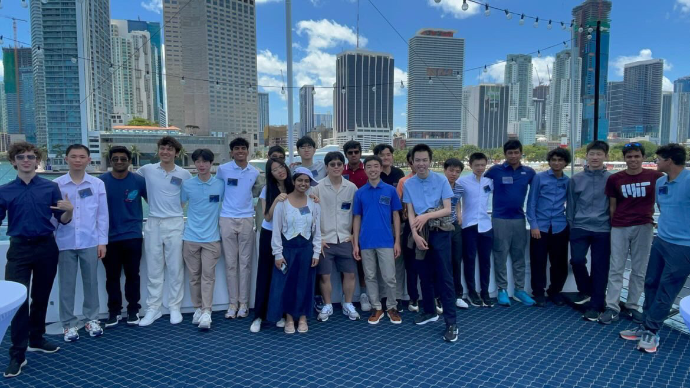

Hi, I'm Jessy Wang — a high school student at Laurel Springs School and
an aspiring research scientist in mathematics, AI, and neuroscience.
Competition math and physics are where I'm strongest: I earned a perfect
score on the F=ma exam (ranked 1st of 6,682), qualified for the USAMO and
for the USAPhO with Distinction, reached the USACO Gold Division, and
qualified for the USNCO national exam. I bring that same problem-solving
to my research at UPMC, where I work on quantum tractography and machine
learning for medical imaging.
I also volunteer as an SAT tutor through Schoolhouse — after scoring a
1540, I wanted to help other students reach their goals. Tutoring showed
me how differently everyone learns, and it's exactly why I built the
tools and games below: each turns a subject — arithmetic, ear training,
or chess — into something students can practice and actually enjoy.
Research
Current work at the intersection of quantum mechanics and medical physics.
A Novel Approach to Reducing Radiation Dose in PET Imaging Through
Magnetic Field Manipulation of Positronium
Under peer review
Jessy Wang · with G. Guerrier (Yale), J. Reyes, MD (UPMC), and
M. Chao, PhD (Mount Sinai, corresponding author) · July 2026
Proposes using the static magnetic field already present in hybrid
PET/MRI scanners to steer positronium spin states via Zeeman mixing —
converting ortho-positronium into para-positronium. This raises the
fraction of two-photon annihilations that PET reconstruction depends
on, so image quality can be preserved while lowering the injected
radiotracer dose and patient radiation exposure. The paper develops
the quantum-mechanical framework and shows a ~0.5 T permanent
magnet is sufficient.
GPA 4.0 · SAT 1540 · ACT 35 (Math 36, English 35, Reading 35)
Research Experience
Research Assistant · UPMC2025 — Now
Assist with research on implementing quantum tractography in neurosurgery.
Explore applications of neural networks for personalized treatment planning.
Study connections between computational modeling, medical imaging, and patient-specific medical decision-making.
Honors & Awards
F=ma Perfect Score — rank 1 / 6,682
USAMO Qualifier (2026)
USAPhO Qualifier — Distinction for Commendable Performance (2025–26)
USACO Gold Division (2025–26)
USNCO National Qualifier (2026) — CMU site
Citadel Pathways Program (2026) — Invitational Participant
All-expenses-paid, invitation-only program for top US high school juniors and seniors recognized for excellence in Math, Physics, and Computing Olympiads.
Learned about quantitative trading, research, and technology through interactive simulations and mentorship from industry leaders.
1 of 26 selected from a pool of ~15,000.

Citadel Pathways Program · Miami, 2026
Utica University AMC Scholarship
Placed 1st out of 100+ students.
One of 2 students out of 100+ to qualify for AIME.
Earned DHR (Distinguished Honor Roll) on the AMC 12.
Awarded the Professor Wayne Newman Palmer Scholarship ($5,000) for two credited classes at Utica University.
Invited to deliver a speech at the awards ceremony; ceremony was later canceled due to weather conditions.

Socials
Let's connect.